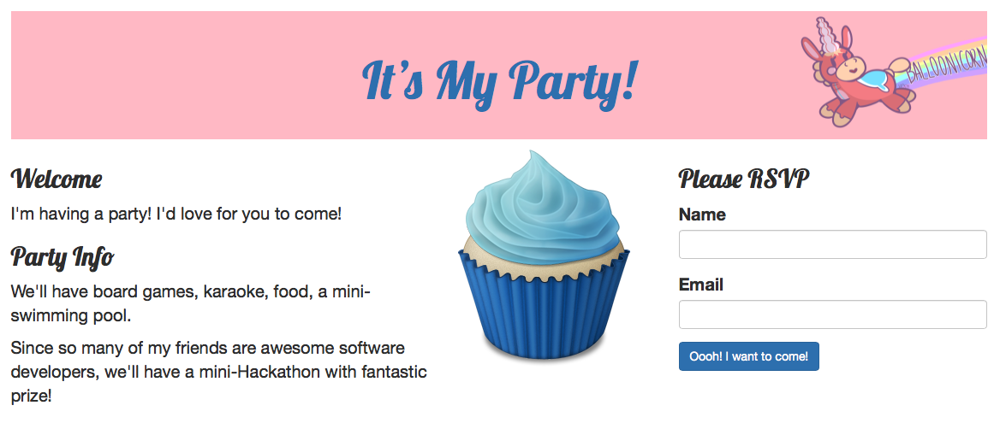
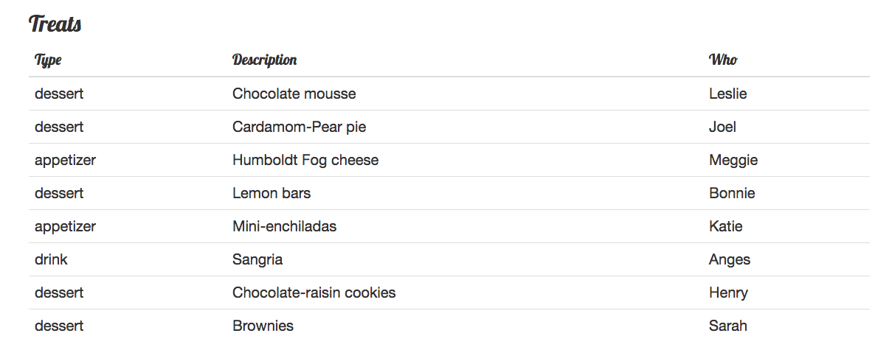

Testing Balloonicorn’s Party
Introduction
Balloonicorn is a fictional character that we’ll be referring to throughout this exercise. If you’re interested, learn more about Balloonicorn here!
Balloonicorn has been having so much fun learning Flask and testing that she’s throwing a party to celebrate—and she’s built a Flask site for the event.
The site works and is reasonably complete, but she’d like to add some tests to it.
Setup
Download the materials for this exercise here.
The Site
To run the site, first make a virtual environment:
$ virtualenv env
Activate your environment:
$ source env/bin/activate
And install the dependencies in requirements.txt.
(env) $ pip3 install -r requirements.txt ...
Next, start up the Flask server, party.py.
$ python3 party.py * Running on http://127.0.0.1:5000/ (Press CTRL+C to quit) * Restarting with stat
If you visit the site at http://127.0.0.1:5000/ you should see the homepage.
You can RSVP for the site in the box at the top right.
Once you’ve done so, the site redirects you back to the homepage and sends a Flask flash message of “Yay!”.
Now, instead of the invitation form, you’ll see details about the party.
Note that the RSVP is stored in the session—so even if you just visit the homepage yourself, you won’t need to RSVP again and will be shown the view with the details of the party.
Treats
Click on the link that lists the treats:
This lists the treats being brought to the party. At the bottom, it tells you which type of treat is most popular and which is least popular (asking you to bring some of that type).
No Mel!
This part is a little awkward.
Last year, Mel, a CEO of a tech company, came to Balloonicorn’s party and drank too much of Agnes’ delicious Sangria (she brings it every year). He got a bit drunk and stood on the picnic table yelling “Developers! Developers! Developers!” and pumping his fist in the air.
Balloonicorn thinks Mel is a tool, and she’d rather he not come to her party. So she’s written logic into Flask to not show Mel the party details.
To see this feature, you’ll need to get rid of the session information for your login. You can do this in any number of ways:
quitting your browser entirely and restarting (since the cookie used for Flask’s session is a lifetime-of-browser cookie)
opening a new Incognito window in Chrome, since that will start a new window without any cookies
going into Chrome’s preferences and clearing your cookies
Now, in the homepage, enter Mel’s information:
- name
Mel Melitpolski
You should get a flash message letting Mel know he can’t come, and won’t see the party details.
Doctests
Keeping Mel Out
Take a look at party.py.
There’s a function, is_mel, that checks if the name and email are Mel’s and returns True if so and False if not:
def is_mel(name, email):
"""Is this user Mel?"""
return name == "Mel Melitpolski" or email == "mel@ubermelon.com"
Add a doctest to this to check if it works. You shouldn’t need to edit the function’s body; just add doctests to the docstring. To do this, you can go into a Python console, import the party module, and test it by hand.
For example:
$ python3 >>> from party import is_mel >>> is_mel('Mel Melitpolski', 'mel@ubermelon.com') True >>> is_mel('Judith Butler', 'judith@awesome.com') False
Then, you can copy and paste that interactive session (leave off the “import” line) and put it into the docstring for is_mel.
Once you’ve done that, you can test your work:
$ python3 -m doctest -v party.py Trying: is_mel("Judith Butler", "judith@awesome.com") Expecting: False ok Trying: is_mel("Mel Melitpolski", "mel@ubermelon.com") Expecting: True ok 6 items had no tests: party party.get_treats party.homepage party.most_and_least_common_type party.rsvp party.show_treats 1 items passed all tests: 2 tests in party.is_mel 2 tests in 7 items. 2 passed and 0 failed. Test passed.
The -v option means, “show me verbose results of the test.” Without that, you get no output for successful tests, only for failing tests. We recommend you run this in verbose mode, otherwise it’s too easy to miss the fact that a test didn’t run—plus, this way, you get helpful information about functions without tests.
You might be wondering how to figure out what to test. These tests are a good start. In this case, our possible outputs for the is_mel function are True and False, so we chose two test inputs that would result in each of those outputs. But there are other things you’ll start to consider as you progress in your mastery of writing tests.
The is_mel function is written to kick Mel out either by name or by email—so add another test or two to your doctest to make sure it finds Mel if this matches only his name or his email.
Most and Least Common Foods
There’s a function called most_and_least_common_type in party.py:
def most_and_least_common_type(treats):
"""Given list of treats, return most and least common treat types.
Return most and least common treat types in tuple of format (most, least).
"""
types = {}
# Count number of each type
for treat in treats:
types[treat['type']] = types.get(treat['type'], 0) + 1
most_count = most_type = None
least_count = least_type = None
# Find most, least common
for treat_type, count in types.items():
if most_count is None or count > most_count:
most_count = count
most_type = treat_type
if least_count is None or count < least_count:
least_count = count
least_type = treat_type
return (most_type, least_type)
This takes a list of dictionaries, where each dictionary has at least one key, type, and returns a tuple of the most-common-type and the least-common-type.
For example:
>>> treats = [ ... {'type': 'dessert'}, ... {'type': 'dessert'}, ... {'type': 'appetizer'}, ... {'type': 'dessert'}, ... {'type': 'appetizer'}, ... {'type': 'drink'}, ... ] >>> most_and_least_common_type(treats) ('dessert', 'drink')
This returns ('dessert', 'drink') because those are the most and
least common type in that passed-in list of treats. Note that in the case of a
tie it will return the first one it found.
Write a docstring to test this function. (Again, don’t alter the body of the function; just the docstring.)
You can study this function’s code to see how it works if you’d like, but you don’t need to do so. Your goal here is to write a test to verify that it works, and there are times when you’ll do that just by knowing what the function should give you back, not by having to understand 100% of it.
“Write” Your Tests in The Console
It’s tempting to just try to write the doctest in your editor directly—but it’s better to “write” the test by trying out the function in the Python console and then pasting it in, like you did for the is_mel function.
Some things to think about:
It’s probably not a good idea for your function to use the real list of of treats in get_treats. Those may change, but you don’t want to have to keep changing your test when they do. Better to make a small, simple list, like the one above, and use that to test it.
Think about edge cases to test:
What if there’s only one type of food? Does it show for both least and most?
What is there is a tie for the most common food?
What if an empty list is given?
Congratulations!
You’ve learned a very useful new coding skill- testing!
Further Study
Then, you may want to look at our Further Study.